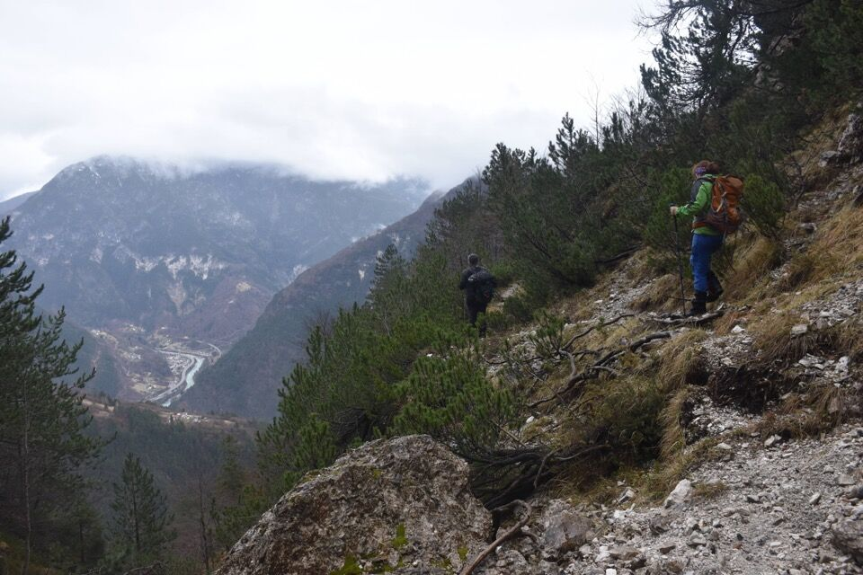
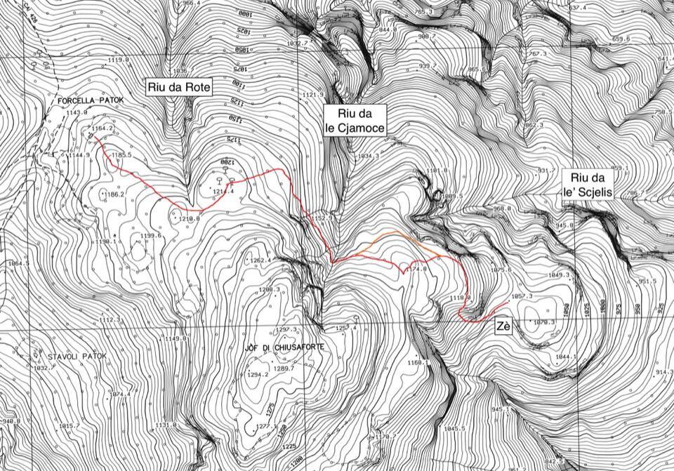

Sospettavo l'esistenza di un sentiero sul lato Nord dello Jouf di Sclûse che collegasse in maniera diretta e con minimo dislivello possibile la forcje di Patoc, dove c'è lo stâli dal Bècul, con il Zè, ai piedi del Cuel di Clâri. Quando si va in giro per questi posti bisogna entrare nell'ottica che un tempo i collegamenti fra i vari stavoli erano importanti, e ogni possibile scorciatoia che facesse risparmiare inutile fatiche è stata esplorata e utilizzata; d'altronde, come dice F. Paolini nel libretto Trois, una vôlte si pasave daperdùt.
Un accenno del libretto appena accennato e un abbozzo di traccia sulle IGM (a posteriori fuorviante) mi faceva ben sperare, così un giorno, con Ivan e Luciana, dopo essere saliti al M. Nauràzis per la Scjalute Sante, siamo scesi alla forcje di Patoc e con meteo non proprio ottimale (nebbia e pioggia!) ci siamo messi alla ricerca di questa traccia. Non è facile da trovare, ma la traccia esiste e tranne nella parte iniziale viene tenuta ben battuta dagli animali.
In genere non abbondo in dettagli, perché penso che a sapere già tutto di posti selvaggi se ne rovini il fascino, ma qui invece si tratta di un sentiero storico, per cui mi sembra giusto darne una relazione dettagliata, che trovate in fondo alla pagina.
Il brutto tempo non ci ha permesso di trovare i resti dello stâli dal Chîchi.
Qui in foto l'avvallamento con curioso macigno in centro.
C'avviciniamo al lato Nord del monte e iniziamo ad intuire la traccia (notare la fettuccia sul faggio a dx - appena vista, ho pensato istantaneamente: è fatta).
Nella parte intermedia non ci si può sbagliare.

Insolito allineamento Cuestemulìn - Dogna.
Superiamo il rio da le Cjamoce; qualche centinaio di metri più in basso lo supera anche il troi da Ombrenum.
Non ho foto della forcelletta citata nella relazione, ma da lì parte una evidente traccia sale verso la cima dello Jouf di Sclûse: penso che questa passi per il cengione sopra il salto di roccia presente sul versante Est dello Jouf (sopra la q1168.1) - e mi ricordo che quando sono salito in cima allo Jouf da Pineit, ho seguito dei bolli blu, più a Est rispetto alla traccia della Tabacco (bollinata di rosso) che mi hanno portato verso Est: resomi conto che il sentiero scendeva, sono tornato indietro, ma ora sospetto che quel sentiero bollato di blu si congiunga alla forcelletta.
Arriviamo ai poveri resti degli stavoli del Zè, sotto il Cuel di Clâri.

Ho pensato: diamo giusto un occhio oltre la sella del Zè, che non si sa mai...
Ormai ci vedo giusto, dato che lì - e la cosa mi ha fatto strabuzzare gli occhi dallo stupore - parte una misteriosa traccia in direzione del riu da le' Scjelis, evidente come un sentiero CAI! (*)
Ecco la relazione promessa:
L'abbozzo del percorso sulla Carta Tecnica Regionale al 5000.
Notare che questo sentiero permette di fare il periplo alto della cima dello Jouf: stavoli Patoc - forcje di Patoc - Zè - Pinet - stavoli Patoc.
Il periplo basso, anche se un po' forzato dato che la forcje di Patoc è 150m più bassa della cima, si può fare così: Raunis, Zeresarie (CAI 426), forcje di Patoc, Ombrenum e infine chiudere l'anello con il sentiero dell'acquedotto che permette di tornare a Raunis.
(*) Aggiunta successiva (marzo 2025): in una domenica di pioggia io Ivan e Luciana, partiti dalla Pontebbana all'altezza del riu Mulin, siamo arrivati al Zè seguendo il sentiero dell'acquedotto fino a Raunis, poi su per il sentiero del Cret di Liscjis (p.83 del libretto Trois di Fabio Paolini), peraltro assolutamente meritevole e che non posso che consigliare, e infine pai çucs siamo arrivati a Pinet, da cui al Zè.
Abbiamo seguito la sopramenzionata traccia, che continua evidentissima in quota, abbassandosi leggermente fino ad oltrepassare il riu da le' Scjelis e passando sotto ad un curioso torrione in procinto di crollare (q1009.5). Speravamo di trovare una traccia che scendesse lungo il costone che delimita in sx orografica il riu da le Cjamoce (verso la q844.0 per capirci), ma ovviamente non c'è nulla di evidente, e benché le linee di livello siano abbastanza rassicuranti, non ci siamo fidati di scendere così all'avventura. Si fanno in salita queste cose!
Arrivati quindi al riu da le Cjamoce, lo abbiamo risalito per circa 100m per ricongiungerci all'itinerario qui relazionato, per poi raggiungere forcella Patoc e tornare alla macchina seguendo il sentiero che passa per Torgul (che bel posto!) e Cuestemulìn.